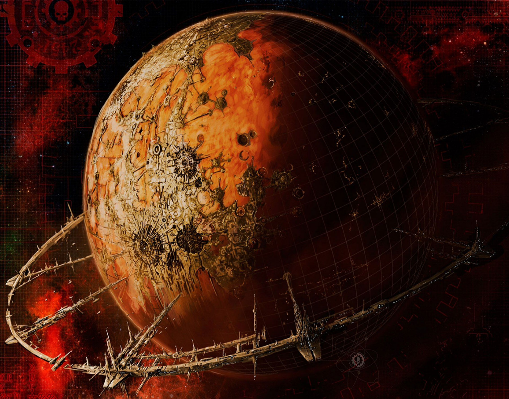

Dossier Mechanicus 850.M41
Les Mondes-Forges sont le cœur industriel de l’Imperium. Là où d’autres planètes produisent, elles transforment. Là où d’autres fabriquent, elles perpétuent.
Gouvernés par l’Adeptus Mechanicus, ces mondes sont dédiés à une seule fonction. Produire la technologie nécessaire à la survie de l’Humanité.

FONCTION IMPÉRIALE
Leurs surfaces sont dominées par des cités-usines, des complexes industriels gigantesques, des réseaux de production s’étendant sur des continents entiers.
L’air est saturé de fumées. Le sol est recouvert de métal. La vie biologique y est réduite au minimum nécessaire.
Chaque Monde-Forge possède ses propres spécialités. Armement, véhicules, vaisseaux, composants technologiques.
Certains produisent des équipements standards. D’autres fabriquent des machines rares, anciennes, ou impossibles à reproduire ailleurs.
DOGME ET DEVOIR
Le fonctionnement repose sur une hiérarchie stricte. Tech-Priests, Magos, serviteurs, ouvriers augmentés.
La majorité de la population n’est plus entièrement humaine. Corps modifiés, remplacés, adaptés à des tâches spécifiques.
La production est constante. Continue. Ininterrompue.
Les chaînes ne s’arrêtent pas. Les machines ne dorment pas.
HÉRITAGE AU SERVICE DU TRÔNE
Chaque arme utilisée par l’Imperium, chaque vaisseau qui traverse le Warp, chaque système qui maintient une cité en vie, dépend directement de ces mondes.
Leur importance stratégique est absolue.
Un Monde-Forge perdu représente une catastrophe. Une capacité de production irrécupérable. Une perte que l’Imperium ne peut pas toujours compenser.
Pour cette raison, ils sont lourdement défendus. Flottes, armées, Titans, systèmes automatisés.
Mais ils restent vulnérables.
Une corruption interne. Une attaque coordonnée. Une défaillance majeure.
Et toute une région de l’Imperium peut se retrouver privée de ressources.
Il faut comprendre ceci. Les Mondes-Forges ne sont pas seulement des centres de production.
Ils sont la condition même de la guerre impériale.
Sans eux, l’Imperium ne combat plus.
Fin de l’extrait. Toute perturbation sur un Monde-Forge doit être traitée comme menace stratégique majeure.